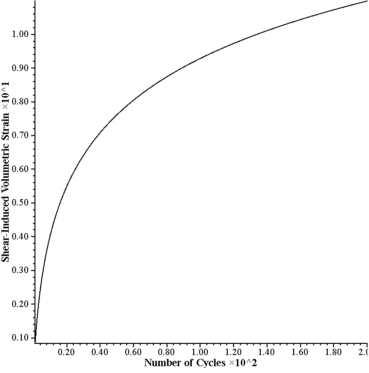

采用 Martin/Byrne 公式的 Finn 模型
实际上，孔隙压力增长是次要效应，尽管许多人似乎认为它是循环加载的主要响应。主要效应是：当材料在围压保持不变下经历完整应变循环时，颗粒骨架发生不可恢复的体积收缩。由于发生的是颗粒重排而非颗粒体积变化，在常围压下孔隙体积减小。若孔隙充满流体，则流体压力升高，作用于颗粒骨架的有效应力降低。注意若试验在常体积下进行，孔隙压力不会升高；正是外部施加的压力由颗粒向流体转移，才造成流体压力升高。
Martin 等公式
该机制由 Martin 等（1975）作了很好描述，他们还指出不可恢复体积应变与循环剪应变幅值之间的关系与围压无关。他们给出以下经验公式，把每循环剪应变的体积减少增量 \(\Delta\epsilon_{vd}\) 与循环剪应变幅值 \(\gamma\) 关联，其中 \(\gamma\) 假定为“工程”剪应变：
其中 \(C^c_1\)、\(C^c_2\)、\(C^c_3\) 与 \(C^c_4\) 为常数。
注意
注意这些常数（\(C^c_1\)、\(C^c_2\)、\(C^c_3\) 与 \(C^c_4\)）并不等同于模型输入常数，因为输入针对的是半个剪应变循环。
注意该方程引入累积不可恢复体积应变 \(\epsilon_{vd}\) 的方式，使体积应变增量随体积应变累积而减小。可以推测若 \(\gamma\) 为零则 \(\Delta\epsilon_{vd}\) 应为零；这意味着这些常数按如下关系联系：\(C^c_1\ C^c_2\ C^c_4 = C^c_3\)。Martin 等（1975）随后通过假定某些模量与边界条件（并未明确定义）来计算孔隙压力变化。我们无需这样做。只要在本构法则中正确计入不可恢复体积变化，FLAC3D 会处理其他效应。
Byrne 公式
Byrne（1991）提出了一个更简单的替代公式：
其中 \(C^c_1\) 与 \(C^c_2\) 为常数，其解释不同于公式 (1) 中的常数。对公式 (2)，Byrne（1991）指出常数 \(C^c_1\) 可由相对密度 \(D_r\) 推得如下：
注意
注意这些常数（\(C^c_1\) 与 \(C^c_2\)）并不等同于模型输入常数，因为输入针对的是半个剪应变循环。
此外，利用 \(D_r\) 与归一化标准贯入试验值 \({(N_1)_{60}}\) 之间的经验关系，
then
此时 \(C^c_2\) 由 \(C^c_2 = {0.4 / C^c_1}\) 计算。更多细节见 Byrne（1991）。
该公式所预测的常幅循环剪应变下的剪切诱导体积应变对循环数的关系绘制于 图 1（Figure 1）。该公式预测剪切诱导（压实）体积应变随循环剪应变水平增大。此外，对给定应变幅值 \(\gamma\)，累积速率随循环数增大而减小。


图 1：Finn/Byrne 公式——常数循环剪应变幅值。
Finn/Byrne 模型的增量体积性状（在一个循环结束时）可表示为
其中 \(\sigma_m = \sigma_{ii} / 3\) 为平均应力，\(p\) 为孔隙压力，\(\alpha\) 为 Biot 系数（对土取 1），\(K\) 为土的排水体积模量，\(\epsilon\) 为体积应变。注意 \(\epsilon\) 在拉伸中为正，而 \(\epsilon_{vd}\) 在压缩中为正。对不排水条件，孔隙压力变化与体积应变变化成正比：
其中 \(M\) 为 Biot 模量。把公式 (7) 代入 (6) 并对 \(\Delta \epsilon\) 求解，可得
若流体相对固体骨架很刚（\(M>>>K\)），则公式 (8) 预测体积无变化。此外，在公式 (9) 中使用 \(\Delta \epsilon = 0\) 可得
公式 (9) 预测有效应力大小随循环剪应变而减小（由剪切诱发压密增大所致）。在常应力 \(\Delta \sigma_m = 0\) 条件下，孔隙压力将升高，且与土的排水体积模量成正比：
而在自由应力条件下，孔隙压力保持不变（\(\Delta p = 0\)），总应力大小按下式减小
注意两种情形下排水（切线）体积模量 \(K\) 都起重要作用，决定着循环加载对有效应力影响的大小。因此 Finn/Byrne 模型抓住了液化的主要物理机制。
Finn 模型
对随机应变循环模式，宜按每半个循环（\({(\Delta \epsilon_{vd})}_{\rm 1/2 cycle}\)）计算体积应变——例如见 Byrne 1991。Finn 内建本构模型把 Martin 等与 Byrne 关系的以下形式纳入标准 Mohr-Coulomb 塑性模型：
Finn 模型——Martin 等公式
其中 \(C_1\)、\(C_2\)、\(C_3\) 与 \(C_4\) 为模型输入常数。
Finn 模型 —— Byrne 表述
除 \(C_1\) 与 \(C_2\) 外，第三个模型输入参数 \(C_3\) 设定阈值剪应变（即低于该剪应变幅值时不产生体积应变）。可通过设置参数 标志 _switch（flag _switch） = 0 或 1 分别选用公式 (12) 或 (13)。就目前而言，该模型已抓住可导致砂土液化的基本机制。除常规参数（摩擦、模量等）外，模型需要公式 (12) 的四个常数，或公式 (12) 的三个常数。对公式 (1)，Martin 等（1975）描述了如何由排水循环试验确定这些常数。或者可以设想用一些试算值在 FLAC3D 中模拟不排水试验，并与相应室内试验结果比较，再调整常数以获得更好吻合。
注意按 Byrne（1991），输入参数 \(C_1\) 与 \(C_2\) 与相对密度或锤击数按如下关系联系：
其中 \(C^c_1\) 分别由公式 (3) 或公式 (5) 给出。
Finn 模型中具有在一般情形下检测应变反向的逻辑。Martin 等（1975）（以及该主题的大多数其他文献）中应变反向的概念是明确的，因为他们考虑一维应变度量。然而在三维分析中，应变率张量至少有六个分量。在 FLAC3D 的 Finn 模型中，这六个应变度量按如下方式累积：
我们采用以下方案在应变空间中定位极值点。以带上标（°）表示前一点、以（°°）表示再前一点，则应变空间中前一单位向量 \(n_i^\circ\) 按下式计算：
其中下标 \(i\) 取值 1 到 6，重复指标表示求和。
新向量 \(\epsilon_i - \epsilon_i^{\circ}\) 从旧点到新点的投影 \(d\) 由该新向量与此前的单位向量的点积给出，
我们采用这样的规则：\(d\) 必须为负（使新的应变段相对前一段为反向）。随后监测 \(d\) 的绝对值，当它经过最大值 \(d_{\rm max}\) 时进行以下计算，前提是已过最小时步数（以防紧随反向之后的瞬变再次触发反向逻辑）。该阈值时步数由性质 ff _latency 控制，此处所报告的计算中设为 50.0。
得到工程剪应变 \(\gamma\) 后，把它代入公式 (12) 或 (13) 得到 \({(\Delta \epsilon_{vd})}_{\rm 1/2 cycle}\)。随后按下式更新 \(\epsilon_{vd}\)，并保存以备公式 (12) 或 (13) 使用。
我们还保存 \({(\Delta \epsilon_{vd})}_{\rm 1/2 cycle}\) 的三分之一，并在下一个半循环修正输入模型的直接应变增量：
注意 FLAC3D 的压缩应变增量为负，而 \(\Delta \epsilon_{vd}\) 为正。因此平均有效应力减小。
上述逻辑显然并不完美，但在简单情形下似乎可用。不过用户必须在使用于实际工程之前核实该算法是否合适。特别是检测到的“半循环”数强烈依赖水平与竖向运动的相对大小，因此孔压增长速率也会对该比值敏感。对坝之类宽度远大于高度的结构，或许只考虑应变的剪切分量更为实际。归根到底，我们需要复杂加载路径下体积变化的更好试验数据；届时模型应据此修订。已证明非常重要的一种效应（例如见 Arthur 等 1980）是主轴的旋转：即便偏应变（或应力）大小保持不变，也可能发生体积压实。这种轴旋转在地震情形中频繁出现。Finn 模型未纳入的另一效应是压实引起的模量增大——已知砂在循环加载压实后弹性上会变硬。该项修改可通过使用 UDM 选项纳入。
Finn 模型在 FLAC3D 中用 zone cmodel 命令加载（即 指定网格单元本构模型（zone cmodel assign） finn）。程序必须配置为动力分析（模型配置动力分析命令（model configure dynamic））才能应用该模型。与其他内建模型一样，性质用 设置网格单元属性（zone property） 命令赋予。以下关键字用于为 Finn 模型赋予性质：
finn 模型性质
用以下关键字配合 设置网格单元属性（zone property） 命令设置 Finn 模型的这些性质。
- finn
- bulk f
弹性体积模量，\(K\)
- cohesion f
黏聚力，\(c\)
- constant-1 f
constant, \(C_1\)
- constant-2 f
constant, \(C_2\)
- constant-3 f
constant, \(C_3\)
- constant-4 f
constant, \(C_4\)
- friction f
内摩擦角 \(\phi\)
- poisson f
泊松比，\(\nu\)
- shear f
弹性剪切模量，\(G\)
- young f
杨氏模量，\(E\)
- flag-brittle b (a)
若为真，则在发生拉伸破坏时把拉伸极限设为 0。默认为 false。
- table-cohesion s (a)
把黏聚力与塑性剪应变关联的表格名称
- table_dilation s (a)
把剪胀角与塑性剪应变关联的表格名称
- table-friction s (a)
把摩擦角与塑性剪应变关联的表格名称
- table-tension s (a)
把抗拉极限与塑性拉应变关联的表格名称
- number-count i (r)
检测到的剪应变反向次数（半循环数）
- strain-shear-plastic f (r)
累计塑性剪应变
- strain-tensile-plastic f (r)
累计塑性拉应变
- strain-volumetric-irrecoverable f (r)
累积不可恢复体积应变 \(\epsilon_{vd}\)，压缩为正，是 Martin 等与 Byrne 公式中所用的区间变量
图例
- (a) 高级属性。
- 该属性具有默认值；在较简单的模型应用中，无需专门赋值。
- (r) 只读属性。
- 该属性不能由用户设置，但可以列出、绘图显示，或通过 FISH 访问。
注意事项
- 定义弹性性质时，只需提供以下两种组合中的一种：体积模量 \(K\) 与剪切模量 \(G\)，或杨氏模量 \(E\) 与泊松比 \(\nu\)。采用后一种组合时，必须先赋予杨氏模量 \(E\)，再赋予泊松比 \(\nu\)。
- 拉伸截断为 \({\sigma}^t = min({\sigma}^t, k_{\phi} / q_{\psi})\)。
注意
*本模型仅适用于 FLAC3D 。
| 这些内容对您有帮助吗？… 版权与免责声明 | FLAC3D © 2019, Itasca | 原文更新于 2020 年 10 月 8 日 |